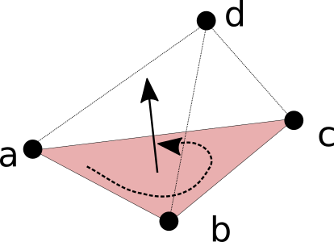
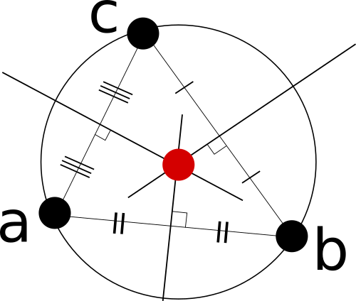

Mini Assignment 1: Geometric Primitives (40 Points)
By Chris Tralie
- Overview
- Submission Instructions
- Example: Vector Projection
- Task 1: Angle Computation (5 Points)
- Task 2: Triangle Area computation (5 Points)
- Task 3: Point Above Or Below Plane? (5 Points)
- Task 4: 2D Line Segment Intersection (10 Points)
- Task 5: 2D Triangle Circumscribed Circle (15 Points)
- Extra Credit: 3D Tetrahedron Circumscribed Sphere (+20 Points)
Overview
The purpose of this assignment is to get students hands on practice with fundamental concepts from vector math and also to introduce them to Javascript and the glmatrix library, and particularly the vec3 class. Students will implement a series of mini algorithms using vector concepts that are commonly used in larger geometry systems. These are real world primitive operations that pop up all the time in graphics, robotics, and physics simulations, to name a few of the many application areas. For a large number students, this will serve as an introduction to translating mathematics into code, which is an extremely useful but sometimes underrepresented skill.
This assignment is split up into two parts to keep everyone on track. You will have five days to complete each part. It is highly recommended that you move onto the second part as soon as you finish the first part, as the second part is conceptually trickier.
Getting Started
To get started, check out or download the code in the github repository at
https://github.com/COMPSCI290-S2016/Mini1_GeometricPrimitives
You will be editing code in the file GeomPrimitives.js. All of the .html files are GUI front end debugging tools for you to check to make sure your code is working properly, as will be described in the individual tasks. I have included a minified version of the glmatrix library which contains the vec3 class for manipulating 3D vectors, as well as a minified version of the plot.ly library for 3D plotting (which I used to help create some GUI visualizations to help you debug...no need to worry about it unless you're interested or you decide to pursue the extra credit)
Collaboration
This is an individual assignment, so all code must be completely your own. However, feel free to post questions on Piazza and to work with each other on the conceptual math part. Also, if you need help debugging, it is fine to show each other Javascript code that you develop for that purpose (just not code that you write for the actual implementations in GeomPrimitives.js). If you are unsure if something is allowed, please ask.
Tips
-
Be sure to carefully reference the documentation of the vec3 class as you go along. Be sure to allocate new vector objects with
vec3.create()orvec3.fromValues()before storing results in them or using them in any way.
-
Since this is our first Javascript assignment, don't forget to hit
F12to bring up the powerful debugging suite, including the console and the ability to set breakpoints. Use logging in the console withconsole.log("Test strings" + x + whatever)to output intermediate values to the debug console.
- Ask questions on Piazza as you are going along and get stuck. Javascript is very "loose" with declarations and types, so there are many things that can happen that wouldn't happen in other languages. One of the most common errors I have personally made is accidentally re-using variable names. This is particularly bad when the original variable was an object and the new variable is a numerical value, and then I try to use the numerical value as if it were an object. This will commonly manifest itself as some kind of "undefined" variable if you log it to the console.
Submission Instructions
You will submit two versions ofGeometricPrimitives.js to Sakai when you are finished. The first version will contain implementations of tasks 1, 2, and 3 (due Sunday 1/24 11:55PM), and the second version will contain implementations of tasks 4 and 5 (due Friday 1/29 11:55PM). Please also submit a README.txt file with both submissions with the following information each time:
- Your name
- Approximately how many hours it took you to finish this assignment (I will not judge you for this at all...I am simply using it to gauge if the assignments are too easy or hard)
- Your overall impression of the assignment. Did you love it, hate it, or were you neutral? One word answers are fine, but if you have any suggestions for the future let me know.
- Any other concerns that you have. For instance, if you have a bug that you were unable to solve but you made progress, write that here. The more you articulate the problem the more partial credit you will receive (fine to leave this blank)
Example: Vector Projection
To get everyone started, I have implemented two sample operations that illustrate some of the functions of the vec3 class: parallel and perpendicular projection of vectors (which is actually not provided in the glmatrix library):Code location:
projVector(u, v) and projPerpVector(u, v) in GeomPrimitives.jsGui Tester:
projection.htmlStudy this code carefully and post on Piazza if you have any questions
Part 1 (Due Sunday 1/24 11:55PM)
Task 1: Angle Computation (5 points)
Given points a, b and c, compute the angle between b and c with respect to a, as shown in the picture belowCode to write: Fill in
getAngle(a, b, c) in GeomPrimitives.jsGui Tester:
angle.htmlTask 2: Triangle Area Computation (5 points)
Use the fact that the magnitude of the cross product of two vectors is the area of the parallelogram spanned by those two vectors to compute the area of a triangle enclosed by three points in 3D.Alternatively, you can use the dot product and the fact that
\[ \sin(\theta) = \sqrt{ 1 - \cos^2(\theta) } \]
(this is simply the pythagorean theorem on unit triangles)Code to write: Fill in
getTriangleArea(a, b, c) in GeomPrimitives.jsGui Tester:
area.html- Test this with some examples you know in the plane (z=0) where you can apply the formula (1/2*base*height) to make sure it makes sense
Task 3: Point Above Or Below Plane? (5 points)
Given three points a, b, and c, determine if the point d is above or below the plane determined by the triangle /\abc, with the plane normal determined by the right hand rule traversing the points counter-clockwise. Return +1 if the point is above, -1 if the point is below, or 0 of the point lies on the plane.In the picture below, point d is above the plane determined by abc in counter-clockwise order using the right hand rule:

Code to write: Fill in
getAboveOrBelow(a, b, c, d) in GeomPrimitives.jsGui Tester:
aboveOrBelow.html- Hint: Use the cross product between two vectors to determine the plane normal, and verify conceptually with the right hand rule to make sure it points in the direction consistent with counter-clockwise specification of abc before you write your code. Then use the sign of the dot product between that normal and some other vector that involves d
Part 2 (Due Friday 1/29 11:55PM)
For this part we will be working in the plane to keep things simple. You can assume the third component of each vec3 is zero (unless you're doing the extra credit).Task 4: 2D Line Segment Intersection (10 Points)
Given a line segment ab and a line segment cd, compute the intersection between ab and cd or return null if there is no intersection. See the picture below for a couple of examples:Code to write: Fill in
getLineSegmentIntersection(a, b, c, d) in GeomPrimitives.jsGui Tester:
segmentIntersection.html-
Be sure to check that the intersection is actually interior to both of the line segments. Otherwise, your code will happily return an intersection that is on the lines that go through each segment, but which may lie outside of one or both segments (you will see this in the GUI if you make this mistake).
-
In addition to testing your code in the GUI, you should test it on a few cases of your own, such as
- Parallel line segments. These should never intersect in planar Euclidean geometry unless they are part of the same line, but it is unlikely that you will get parallel lines by randomly clicking in the GUI, so you should make sure that case works. Be sure to handle both the case where they are parallel on different lines and parallel on the same line (hint: the cross product of two parallel vectors is zero and hence has length zero). In all cases where vectors are parallel, you should return null
Task 5: 2D Triangle Circumscribed Circle (15 Points)
Given a triangle /\abc, determine the center and radius of its circumcenter by intersecting the perpendicular bisectors from two sides, as discussed in class and as shown in the picture below:
Code to write: Fill in
getTriangleCircumcenter(a, b, c) in GeomPrimitives.jsGui Tester:
triangleCircumcenter.html- Note that there are three perpendicular bisectors but they all intersect in the same place, so you only have to intersect two of them. Pick two to make it easier on yourself
- After you compute direction vectors for bisector lines, be sure to normalize them to avoid any numerical precision problems when using them in subsequent computations
-
Part of the code for this is very similar to the code that intersects line segments, but you no longer have the constraints that the intersection has to lie in any particular range.
- For obtuse triangles, the circumcenter should lie outside of the triangle. This is not a bug but a geometric fact. This is one of the many ways that obtuse triangles can cause pitfalls (in this case if we were, for example, to use the circumcenter to split triangle abc into three quadrilaterals with perpendicular bisectors as the sides). We will talk more about this in the fourth unit when discussion Voronoi area weights for "stretchy shapes."
Extra Credit: 3D Tetrahedron Circumscribed Sphere (+20 Points)
The idea in the last question can be extended recursively to higher dimensions. For a collection of four points that make up a tetrahedron in 3D, it is possible to find a sphere that touches all four points by casting a line through the circumcenter of two of its triangle faces, perpendicular to each triangle face, and looking at the intersection.Code to write: Fill in
getTetrahedronCircumsphere(a, b, c, d) in GeomPrimitives.jsGui Tester:
None: Write your own using the ones I made as an example and the plot.ly reference to get all of the bonus points.